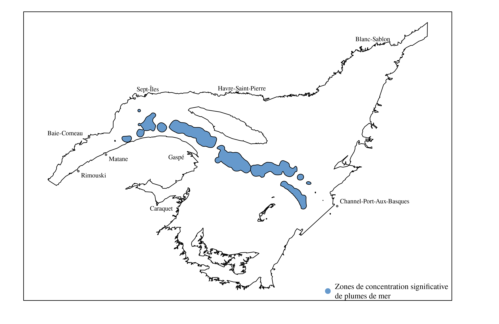

Variables environnementales
Connaissances sur l’habitat des plumes de mer
Les connaissances sur l’habitat de la plume de mer dans le golfe du Saint-Laurent sont limitées à ce jour. Les travaux de Kenchington et al. (n.d.) ont délimité des zones d’importances pour la plume de mer est élevées avec la méthode du noyau. Ces zones où la concentration de plumes de mer est particulièrement élevée se situent le long du Chenal Laurentien Figure 1.

Ces polygones ont été complémentés par les modèles d’espèces réalisés par Murillo et al. (2016). Les modèles basés sur des arbres décisionnels ont permis d’identifier la salinité et la température des eaux de fond ainsi que la profondeur comme variables les plus importantes pour la prédiction de la présence de plumes de mer Murillo et al. (2016). La productivité primaire et la température des eaux de surface sont quant à elles les deux variables les plus importantes à la prédiction de la biomasse de plume de mer Murillo et al. (2016). D’autres modèles de distribution de la plume de mer ont également été réalisés pour complémenter les travaux de Kenchington et al. (n.d.). Ces modèles visent la région des Maritimes (Beazley, Kenchington, et al. 2016), les plates-formes de Terre-Neuve et du Labrador (Guijarro et al. 2016) et l’est de l’Arctique (Beazley, Murillo, et al. 2016). La profondeur est une variable importante à la prédiction de la présence de la plume de mer dans ces trois régions (Beazley, Kenchington, et al. 2016; Beazley, Murillo, et al. 2016; Guijarro et al. 2016), alors que l’étendue des valeus de salinité des eaux de fond s’est également avérée importante pour le modèle de la région de l’Arctique (Guijarro et al. 2016).
Nous nous sommes également fiés sur d’autres études portant sur la distribution et l’habitat de la plume de mer ailleurs dans le monde afin d’élaborer la liste de variables environnementales à utiliser avec nos modèles. La Table 1 présente un résumé de ces études avec les taxons visés, l’aire d’étude et les variables les plus importantes pour la prédiction de la présence de la plume de mer.
| Études | Taxons visés | Aires d’étude | Variables |
|---|---|---|---|
| Gullage, Devillers, and Edinger (2017) | Plates-formes de Terre-Neuve et du Labrador | ||
| Yesson et al. (2012) | Global | ||
| Greathead et al. (2015) | Royaume-Uni | ||
| Downie et al. (2021) | Royaume-Uni | ||
| Ross et al. (2021) | Norvège |
Listes des données environnementales présentées
En raison de l’état des connaissances relativement limitée sur l’habitat de la plume de mer dans le golfe du Saint-Laurent, il est préférable d’explorer un grand nombre de variables avant de commencer la modélisation afin d’éviter d’exclure une variable potentiellement importante dès le départ. Les prochaines sections présentent les 61 variables environnementales intégrées jusqu’à présent pour modéliser l’habitat potentiel de la plume de mer. Ces données proviennent de Pêches et Océans Canada ainsi que de Bio-Oracle. Les données ont toutes été reprojetées sur une grille de 36 secondes d’arc de résolution, à l’exception des données de sédiments puisqu’elles sont sous forme de polygones.